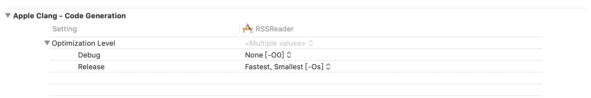
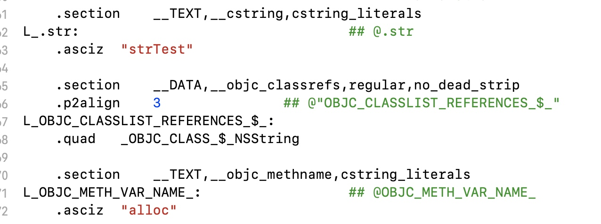

iOS 编译 Clang 和 LLVM
本文学习自戴铭老师的深入剖析 iOS 编译 Clang LLVM
LLVM
LLVM( Low Level Virtual Machine)是swift之父开发的一款编译器开发工具套件，可以用于常规编译器，JIT编译器（JIT是一种提高程序运行效率的方法）、汇编器、调试器、静态分析工具等。其后来又开发了clang，
iOS开发中的OC就是用Clang/LLVM来编译的
Swift是swift/LLVM,其中Swift前端会多出来SIL optimizer（SIL优化器），把.swift生成的中间代码 .sil，因为swift在编译期间就完成了方法绑定直接通过地址调用属于强类型语言，方法调用不再需要像OC那样的消息发送，这样编译器可以获得更多信息在后面的后端优化上
LLVM是一个模块化和可重用的编译器和工具链技术的集合，Clang是LLVM的子集，是C、C++、Object-C的编译器，用来专门给Apple使用提供比GCC更快的编译速度。Clang提供了clang static analyzer即analyzer分析工具用于进行语法分析，语义分析和生成中间代码，这个过程会对代码进行检查，出错的和需要警告的会标注出来。lld是Clang/LLVM内置的链接器，clang必须调用链接器来产生可执行文件
LLVM 比较有特色的一点是它能提供一种代码编写良好的中间表示 IR（IR寄存器？），这意味着它可以作为多种语言的后端，这样就能够提供语言无关的优化同时还能够方便的针对多种 CPU 的代码生成
编译流程
先写一个简单的例子程序来看一下程序如何运行
#import <Foundation/Foundation.h>
#define DEFINEEight 8
int main(int argc, char * argv[]) {
@autoreleasepool {
#pragma mark - Mark--
int eight = DEFINEEight;
int six = 6;
char a = 'a';
char *str = "strTest";
NSString *site = [[NSString alloc] initWithUTF8String:"starming"];
int rank = eight + six;
NSLog(@"%@ rank %d", site, rank);
printf("%s and %c", str, a);
// return UIApplicationMain(argc, argv, nil, NSStringFromClass([AppDelegate class]));
}
// return 0;
}
查看clang编译的阶段
//在终端输入命令
clang -ccc-print-phases main.m
//总共有7步骤，
0: input, “main.m”, objective-c //输入文件
1: preprocessor, {0}, objective-c-cpp-output //预编译
2: compiler, {1}, ir //优化编译为中间代码IR,前端的输出、后端的输入
3: backend, {2}, assembler //编译为汇编语言
4: assembler, {3}, object //汇编为目标程序
5: linker, {4}, image //链接为可执行文件
6: bind-arch, “x86_64”, {5}, image
查看OC代码的C语言实现:
clang -rewrite-objc main.m会生成一个main.cpp的C语言文件
//在文件的最后可以看到我们代码的实现
int main(int argc, char * argv[]) {
/* @autoreleasepool */ { __AtAutoreleasePool __autoreleasepool;
int eight = 8;
int six = 6;
char a = 'a';
char *str = "strTest";
NSString *site = ((NSString * _Nullable (*)(id, SEL, const char * _Nonnull))(void *)objc_msgSend)((id)((NSString *(*)(id, SEL))(void *)objc_msgSend)((id)objc_getClass("NSString"), sel_registerName("alloc")), sel_registerName("initWithUTF8String:"), (const char *)"starming");
int rank = eight + six;
NSLog((NSString *)&__NSConstantStringImpl__var_folders_m7_58pb6m6x3dqbv727djzdvbvw0000gn_T_main_3cf008_mi_0, site, rank);
printf("%s and %c", str, a);
}
}
查看操作内部命令，可以使用 -### 命令
clang -### main.m -o main
查看clang的的预编译实现:
clang -E main.m查看预编译的结果//在预编译文件的最后可以看到我们代码的预编译结果
# 1 "/Applications/Xcode.app/Contents/Developer/Platforms/MacOSX.platform/Developer/SDKs/MacOSX10.14.sdk/System/Library/Frameworks/Foundation.framework/Headers/FoundationLegacySwiftCompatibility.h" 1 3
# 185 "/Applications/Xcode.app/Contents/Developer/Platforms/MacOSX.platform/Developer/SDKs/MacOSX10.14.sdk/System/Library/Frameworks/Foundation.framework/Headers/Foundation.h" 2 3
# 12 "main.m" 2
int main(int argc, char * argv[]) {
@autoreleasepool {
UIView *view = [[UIView alloc] init];
view.backgroundColor = [UIColor redColor];
int eight = 8;
int six = 6;
char a = 'a';
char *str = "strTest";
NSString *site = [[NSString alloc] initWithUTF8String:"starming"];
int rank = eight + six;
NSLog(@"%@ rank %d", site, rank);
printf("%s and %c", str, a);
}
}在预编译的过程中做的事情有:
#define宏的替换#include#import文件的导入#indef- 注释的去除
#pragma的去除
在预处理完成后进行词法分析，把代码编程一个个的token，比如大小括号，等于号还有字符串等,格式化代码
clang -fmodules -fsyntax-only -Xclang -dump-tokens main.m然后语法分析，验证语法是否正确，将所有节点组成抽象语法树AST
clang -fmodules -fsyntax-only -Xclang -ast-dump main.m下面为部分简单语句的AST结构:
//int eight = 8;

//char a = 'a';

//char *str = "strTest";

//NSString *site = [[NSString alloc] initWithUTF8String:"starming"];

//NSLog(@"%@ rank %d", site, rank);

完成这些步骤之后，就可以开始中间代码的生成了
CodeGen会负责将语法树自上向下逐步翻译成LLVM IR，IR就是编译过程前端的输出、后端的输入用命令行:
clang -S -fobjc-arc -emit-llvm main.m -o main.ll
生成.ll文件即为IR中间代码
LLVM会在这一步做一些优化的事情，我们也可以在Xcode中设置优化级别


默认为在debug模式下为-O0.Release模式下为-Os
我们也可以使用命令行指定优化级别:
//指定优化级别为-O3 clang -O3 -S -fobjc-arc -emit-llvm main.m -o main.ll
最直接的结果,就是这两个优化命令，对我们的程序产生的IR文件分别为//108行代码 和81行代码Pass 是 LLVM 优化工作的一个节点，一个节点做些事，一起加起来就构成了 LLVM 完整的优化和转化。
如果开启了
bitcode苹果会做进一步的优化，有新的后端架构还是可以用这份优化过的 bitcode 去生成。clang -emit-llvm -c main.m -o main.bc编译生成汇编文件
//生成汇编文件 main.s clang -S -fobjc-arc main.m -o main.s下面是部分main.s汇编文件内容
汇编之后生成目标文件
//生成目标文件 main.o 此时内容就是一堆二进制了 clang -fmodules -c main.m -o main.o链接后生成可执行文件
clang main.o -o main执行可执行文件
执行 ./main
输出
starming rank 14
Copyright © 2015 Powered by MWeb, Theme used GitHub CSS.